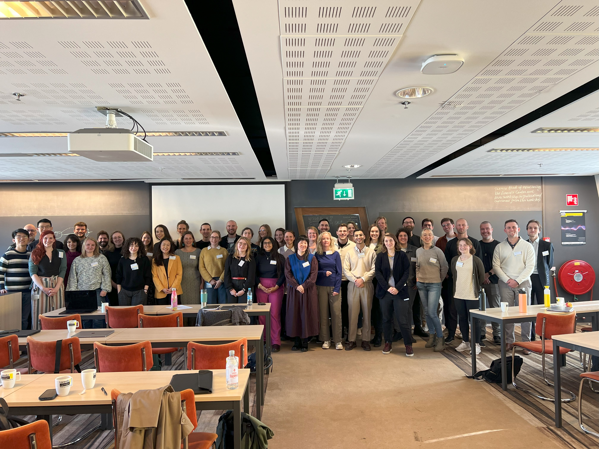
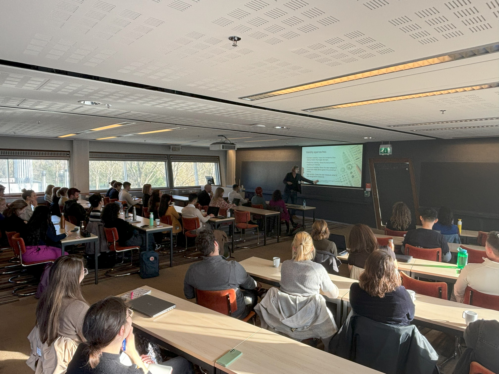
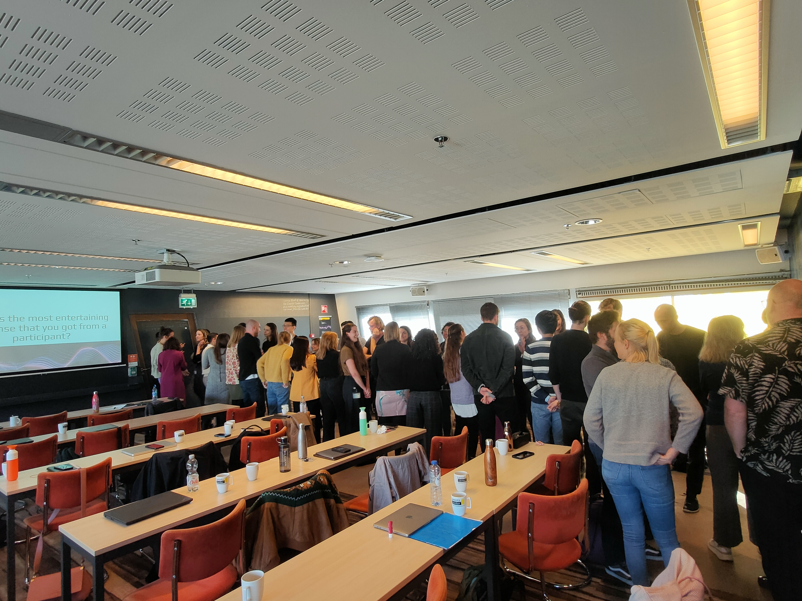
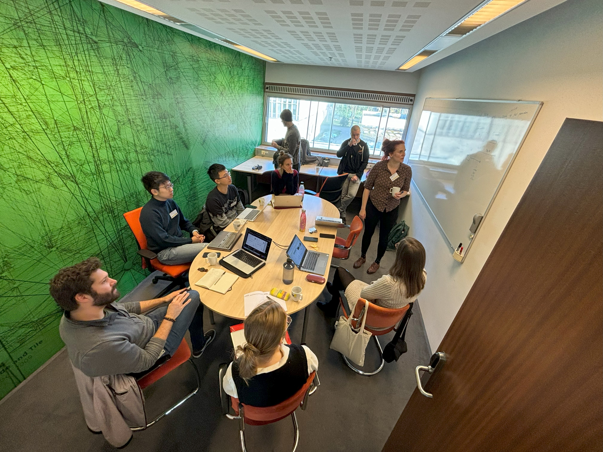
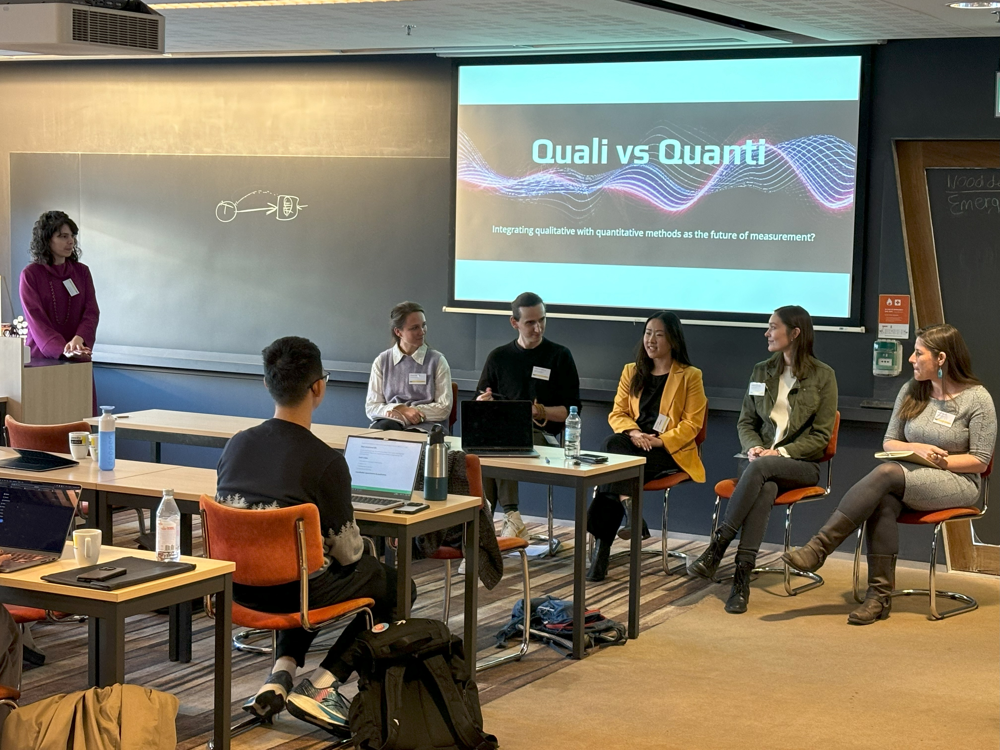
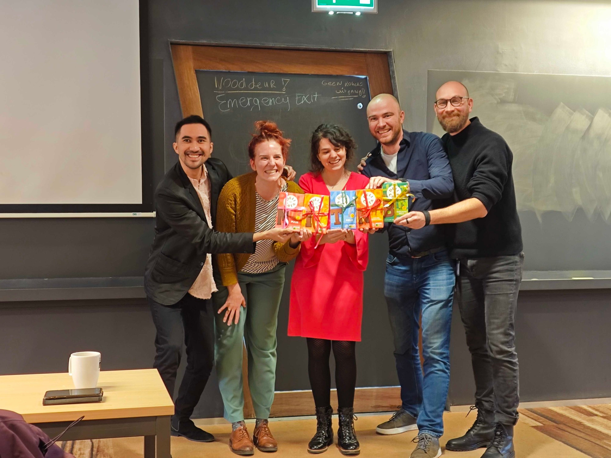

In-person meetings
Since 2024, we organize in-person MITNB meetings where we bring together members of the consortium to take part in a multi-day workshop. The aim of these meetings is to work on concrete measurement issues in the field of intensive longitudinal data collection. These meetings combine presentations, roundtable discussions, hackathons, and networking opportunities, and have a strong interdisciplinary nature by bringing together experts from clinical psychology, developmental psychology, methodology, and other psychological disciplines.
MITNB meeting 2024
The first MITNB meeting was organized as an NWO-funded Lorentz workshop, held from November 4–8, 2024, in Leiden, the Netherlands. The focus of the meeting was on the integration of qualitative and quantitative methodologies to improve Ecological Momentary Assessment.
The meeting opened with a keynote by Prof. Denny Borsboom, who gave a state-of-the-art presentation about how important theory is to understand measurement and the potential of formal modeling as an important thinking tool.
Moreover, we offered four hands-on workshops designed to introduce different qualitative and computational approaches. Those included:
- Cognitive Interviewing: A Gentle Introduction to Qualitative Data Collection (Miguel Silan & Leonie Schorrlepp)
- Reflexivity and Triangulation in ESM: Questioning the Questions (Femke Truijens & Melissa de Smet)
- Textual Data in ESM: Using a New Shiny App for Open-Ended Responses (Marie Stadel)
- Computational Linguistic Techniques for Text Data Analysis (Katie Hoeman)
We also had two roundtable panel sessions which explored critical methodological themes:
Integrating qualitative with quantitative methods as the future of measurement?
Panelists: Shirley Wang, Leonie Vogelsmeier, Miriam Hehlmann, Freek Oude Maatman, Katie HoemanFormalization as the Future of Measurement?
Panelists: Markus Eronen, Marieke Helmich, Jonas Haslbeck, Fred Hasselman
A main part of the meeting were the hackathons, during which participants worked on concrete measurement issues. Examples of these topics were: differences in interpretations of PHQ-9 items, real-time dynamics of response processes during emotion rating, and the accuracy and consistency of Visual Analog Scales (VAS).
The meeting facilitated in-depth methodological exchange, fostered interdisciplinary collaboration, and led to several newly initiated joint research projects. Please see the Literature Overview for some of the outputs.
Photos from MITNB workshop 2024






MITNB meeting 2025
The MITNB 2025 meeting will take place at the Tilburg Experience Sampling Center (TESC) from 3 to 7 November, 2025, in Tilburg, the Netherlands. This year’s workshop focuses on thinking about and modeling reliability and different time scales in ESM research. Key issues include modeling the process at the timescale at which it is theorized to unfold, matching this with the timescale at which the process is measured, and relating processes unfolding at different timescales. More information will follow soon!